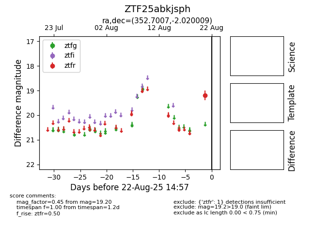

Target ZTF25abkjsph at 2025-08-22 15:51, see:
FINK: fink-portal.org/ZTF25abkjsph
Lasair: lasair-ztf.lsst.ac.uk/objects/ZTF25abkjsph
ALeRCE: alerce.online/object/ZTF25abkjsph
alt names
ZTF25abkjsph (ztf,alerce)
coordinates:
equatorial (ra, dec) = (352.7007,-2.02001)
galactic (l, b) = (81.9475,-58.32302)
photometry
last ztfr=19.20
1 ztfr detections
